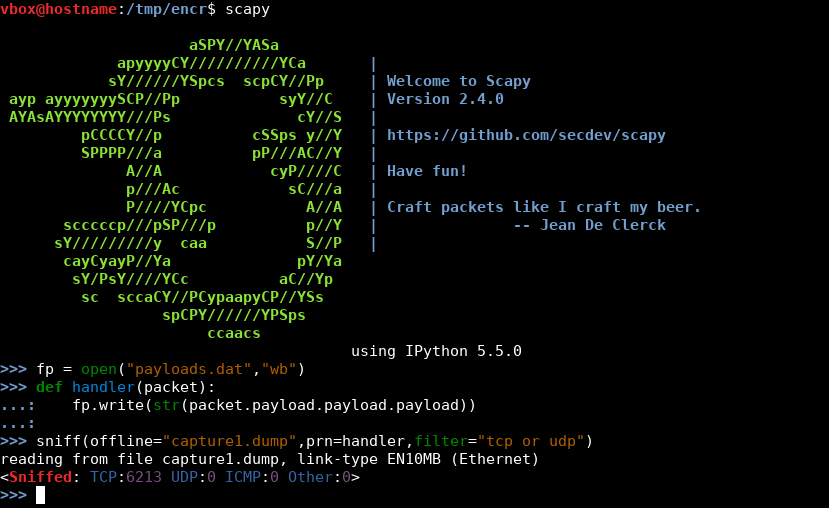

Using scapy

>>> fp = open("payloads.dat","wb")
>>> def handler(packet):
...: fp.write(str(packet.payload.payload.payload))
...:
>>> sniff(offline="capture1.dump",prn=handler,filter="tcp or udp")
reading from file capture1.dump, link-type EN10MB (Ethernet)
<Sniffed: TCP:6213 UDP:0 ICMP:0 Other:0>